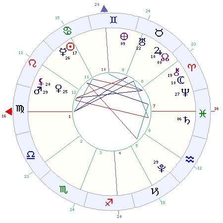

Mandala Astrológica

Casas da RS nas Casas do Mapa Natal
Ascendente da RS na Casa 2 do Mapa Natal
Seu interesse principal neste ano vai girar em torno dos assuntos financeiros. Se o resto da RS for positiva, você terá boas oportunidades nos negócios e terá muitos sucessos. Mas se a RS for mais negativa, é conveniente que você tenha muita cautela, pois terá aborrecimentos ou perdas financeiras neste ano.
Meio do Céu da RS na Casa 11 do Mapa Natal
A sua carreira vai progredir, mas dependendo da ajuda de amigos. Será um período em que você vai se dedicar a seus projetos e sonhos, podendo colocá-los em prática. Precisa ter cuidado, pois pode passar mais tempo planejando do que executando, e a tendência é de se dedicar a conseguir objetivos a longo prazo.
Casa 2 da RS na Casa 3 do Mapa Natal
Neste ano sua situação financeira vai estar ligada a trabalhos intelectuais ou estudos. Outros assuntos da casa 3 também podem se relacionar às suas finanças, como pequenas viagens, irmãos, parentes próximos ou vizinhos. Com uma RS positiva você pode esperar ajuda dessas pessoas, mas se a RS for problemática, convém ficar alerta com suas ações.
Casa 3 da RS na Casa 4 do Mapa Natal
Sua vida doméstica vai ser um pouco agitada neste período. Pode ocorrer até mesmo uma mudança de residência. Também pode ser um período de muitas viagens, que o façam ficar pouco em casa. Com certeza essa agitação toda vai mexer com o bom relacionamento da família.
Casa 4 da RS na Casa 5 do Mapa Natal
O ambiente familiar vai estar mais alegre e festivo neste período. Podem acontecer muitas festas e seus pais terão melhor humor. Talvez nasça uma criança nova em casa, renovando as esperanças de todos. Você pode se dedicar a um novo hobby em casa, ou vai dar mais tempo ao seu lazer.
Casa 5 da RS na Casa 7 do Mapa Natal
Esta posição pode significar um casamento feliz para quem está noivo. Também pode trazer boa sorte em contratos e associações comerciais. Para quem já é casado, pode significar um renascimento afetivo com o cônjuge e planos de novos filhos.
Casa 6 da RS na Casa 7 do Mapa Natal
Neste período você pode ter preocupações com a saúde de seu cônjuge ou sócio, que estará mais vulnerável. Também pode significar que o seu casamento esteja com problemas e mereça mais atenção. O mesmo pode se dizer de uma sociedade comercial. Talvez este aspecto signifique uma nova sociedade ou casamento com um colega de trabalho. Só a concretize depois de analisar o resto da RS e ver se é positiva.
Casa 7 da RS na Casa 8 do Mapa Natal
Será um período em que os assuntos de contratos com dinheiro envolvido estarão bem relevantes. Se o resto da RS for positivo, você poderá ter bons lucros; caso contrário, convém se acautelar. Os assuntos referentes a seu casamento, principalmente relativos a seu cônjuge, chamarão sua atenção. Pode ter que ajudar a resolver crises financeiras de seu cônjuge ou sócio.
Casa 8 da RS na Casa 9 do Mapa Natal
Se tiver assuntos de heranças a resolver, neste período terá de lidar com advogados e a Justiça. Poderá repensar suas crenças e sua fé religiosa, procurando descobrir novos caminhos e abandonando conceitos antigos. Talvez tenha planos de uma viagem ao exterior que não se realizarão como se espera.
Casa 9 da RS na Casa 10 do Mapa Natal
Provavelmente ocorrerão mudanças na sua situação social. Será um período de maior ambição profissional, que pode levar a um progresso considerável. Se você estuda ou tem alguma atividade acadêmica, poderá ser um período de recompensas e até homenagens. Pode começar alguma atividade de pesquisa ou estudo científico com bastante entusiasmo, e que pode trazer benefícios à sua carreira.
Casa 11 da RS na Casa 1 do Mapa Natal
Neste ano você se dedicará intensamente a novos projetos, e dará novo alento às suas esperanças. Suas amizades terão destaque. Reacenderá antigas amizades e poderá se beneficiar com o auxílio de algum amigo. Talvez você é que tenha a responsabilidade de apoiar alguma pessoa próxima.
Casa 12 da RS na Casa 1 do Mapa Natal
Você terá um período de descontentamento geral e talvez até indefinido. Vai sentir que as coisas não estão muito bem, mas sem saber exatamente o que está errado. Será um período de maior interiorização, que pode ser excelente para meditação e estudo de assuntos esotéricos ou pesquisas científicas.
Casas da RS nos Signos
Ascendente ou Casa 1 da RS em Virgem
Este signo no Ascendente dá indicações de que você estará voltado às atividades cotidianas na maior parte do tempo. Você não estará inovando muito, mas apenas tentando manter a sua atual situação de vida. A saúde pode estar mais fraca e você estará mais vulnerável a infecções. Neste período você estará mais organizado e minucioso, por isso será bom para o trabalho burocrático e para reformular sua rotina doméstica.
Casa 2 da RS em Libra
A tendência será de ter um ano razoavelmente equilibrado para seu dinheiro. Pode não ter ganhos estupendos, mas o dinheiro não deve faltar. Terá conforto e bem-estar, a menos que hajam muitos aspectos negativos. A sua situação financeira pode ser ajudada por uma sociedade ou pelo casamento.
Casa 3 da RS em Escorpião
Talvez você esteja mais curioso que o seu normal, e se interesse por algum tipo de pesquisa ou estudo de assuntos científicos ou misteriosos. Mas suas ideias não serão muito organizadas neste período. O convívio com as pessoas do dia-a-dia nem sempre será tranquilo. Poderão existir ocasiões de desentendimentos ou desconfianças. As viagens curtas não serão de todo agradáveis; pequenos acontecimentos desagradáveis irão atrapalhá-las.
Casa 4 da RS em Sagitário
Talvez pense em mudar de residência neste ano. Pode ser para perto ou longe, mas terá a sensação de que atravessou o mundo para achar outro endereço. Este pode ser um período em que você se envolva em discussões filosóficas ou morais com a família, que podem ajudá-lo emocionalmente. Seus pais poderão estar numa boa fase financeira e resolverem fazer uma viagem.
Casa 5 da RS em Capricórnio
Você não se deixará levar impulsivamente por nenhuma emoção nos relacionamentos afetivos. É claro que vai senti-las, mas estará muito controlado e prudente nesses assuntos. O relacionamento com os filhos será calmo e visando ajudá-los a crescer, com sua autoridade e paciência. Não estará propenso a fazer investimentos arriscados, preferindo uma poupança mais tradicional.
Casa 6 da RS em Aquário
Você vai estar um pouco descontente no emprego. Vai ser um período em que você vai desejar muito a sua liberdade. Gostaria de poder se estabelecer por conta própria e se tornar independente. Quanto à sua saúde, precisará tomar cuidado com a pressão sanguínea e com as veias das pernas. Os tornozelos também estarão sensíveis a ferimentos.
Casa 7 da RS em Peixes
No casamento, você viverá momentos tranquilos, num ambiente romântico e de sonhos. No entanto, a realidade será mais instável, pois seu cônjuge estará indeciso e impressionável demais. Ele não será um apoio forte neste período. Em sociedades comerciais, poderá ter problemas, devido à falta de clareza nas comunicações entre os sócios e a possibilidade de fazerem maus negócios.
Casa 8 da RS em Áries
Talvez você tenha algumas dificuldades financeiras por causa de ações imprudentes de seu cônjuge. Ele pode fazer algum investimento impensado e ter prejuízos. Se espera receber alguma herança, neste período não obterá os bons resultados que quer. Mas pode ser uma boa época para dar entrada num inventário. Em sociedades, pode correr riscos por atitudes impensadas de seu sócio quanto a investimentos.
Casa 9 da RS em Touro
Provavelmente você não fará muitas viagens neste ano. Será uma época mais caseira. Seus ideais serão simples e até ingênuos. Vai almejar coisas práticas e passíveis de serem realizadas. Poderá ter interesse por assuntos artísticos de algum tipo, e resolver até fazer um curso sobre isso. Neste período você terá ideais firmes. Não se arrependerá nem mudará de opinião com relação a seus sonhos.
Meio do Céu ou Casa 10 da RS em Gêmeos
Você poderá ter êxito na carreira por causa de sua inteligência e sua capacidade de adaptação, que estarão aguçadas neste período. Mesmo assim, será um ano de instabilidade profissional. Você pode se sentir inseguro e com medo de perder o emprego. Pode acontecer de você fazer várias coisas ao mesmo tempo, dispersando suas energias. Será um bom período para quem trabalha com publicidade, jornalismo, educação e assuntos comerciais.
Casa 11 da RS em Câncer
Se você fizer projetos neste ano, provavelmente eles serão relacionados com assuntos familiares ou sobre sua casa. Terá mais contatos com amizades femininas do que masculinas. Seus amigos estarão mais emotivos, mas também mais instáveis e sujeitos a mudanças de humor. Pode aumentar o número de amigos, e também terá maior popularidade no convívio com eles. Pode reencontrar amigos do tempo de infância, que não via há muito tempo.
Casa 12 da RS em Leão
Sua maior lição neste ano deverá ser a de diminuir sua atitude imponente e procurar ser mais modesto. Não estará com um senso de autoridade muito adequado, e será mais produtivo como subalterno de alguém. Talvez você esteja num período de baixa vitalidade física, por isso não exija demais de sua energia. Pode sentir alterações na pressão sanguínea.
Planetas nas Casas da Rev. Solar
Sol na Casa 11 da RS
Você terá um ano em que aumentará o contato com seus amigos. Novas amizades podem nascer, ou algumas antigas podem ser reavivadas. Talvez algum amigo lhe dê uma ajuda importante em algum assunto difícil. Pode ser o momento de tentar concretizar algum projeto antigo.
Lua na Casa 7 da RS
Este será um período em que você poderá esperar mudanças na vida conjugal ou em sociedades comerciais. Se o resto da RS for positivo, as coisas podem mudar para melhor, e a vida doméstica se tornará mais importante. Se for uma RS menos positiva, esta posição pode significar instabilidade e insegurança no casamento ou com sócios. Para mulheres casadas, pode significar o nascimento de um filho neste período.
Mercúrio na Casa 11 da RS
Suas amizades vão estar em destaque neste ano. Pode fazer muitos novos amigos, ou melhorar bastante seu relacionamento com os antigos. O diálogo será seu maior aliado ao lidar com as pessoas que você quer como apoio, para realizar seus projetos e esperanças. Pode esperar um maior contato e um ótimo entendimento com pessoas mais jovens que você neste ano. Eles podem melhorar seu ânimo e alegrá-lo bastante.
Vênus na Casa 12 da RS
Talvez este não seja um bom período para a sua vida afetiva. Por melhor que seja a época, sempre vai haver a tendência a sofrimentos e a um certo isolamento seu. Pode haver um rompimento, ou mesmo um afastamento e certa frieza afetiva. Você pode ter aborrecimentos por causa da saúde de alguma mulher na família, que vão derrubar seu otimismo. Na saúde, pode ter problemas com os rins ou com o nível do açúcar no sangue.
Marte na Casa 12 da RS
Você se sentirá prejudicado em muitos momentos neste ano. Pode enfrentar mais problemas que o normal, o que irá torná-lo irritadiço. Seria mais conveniente levar este período em "banho-maria " , evitando as novidades arriscadas. Quanto à saúde, poderá se sentir mais fraco e propenso a inflamações ou ferimentos acidentais.
Júpiter na Casa 8 da RS
Este será um ótimo período para lidar com assuntos legais, processos e inventários. Pode se tornar herdeiro ou beneficiário de alguém, com bons lucros. Se for uma RS menos positiva, pode significar dívidas ou prejuízos em assuntos financeiros. Em sociedades comerciais ou no casamento, esta posição pode favorecer a situação financeira e os investimentos do cônjuge ou sócio.
Saturno na Casa 7 da RS
Seu casamento passará por um período de maior frieza e falta de entusiasmo. Você se sentirá cansado da relação. Mas será preciso cultivar a paciência e a sabedoria de perceber que tudo na vida passa por fases de altos e baixos. Se for solteiro e estiver planejando se casar, talvez isso não se realize tão cedo. Em sociedades comerciais, poderá ter problemas ou restrições aos negócios. Os contratos podem não dar um bom resultado neste período.
Urano na Casa 9 da RS
Suas ideias vão mudar bastante. Você estará mais revolucionário e liberal. Estará pensando em coisas progressistas, em autodidatismo, mas sua mente também estará indisciplinada. Será um bom período para o estudo de coisas como Astrologia, Meteorologia ou outros assuntos originais. Você provavelmente terá chances de fazer viagens aéreas ao exterior, em viagens que podem trazer novos ares à sua mente.
Netuno na Casa 7 da RS
Seu casamento pode passar por crises, motivadas por ciúmes, inseguranças ou intrigas. Pode não estar havendo nada realmente, mas você tem a sensação de que está, e isso lhe confunde bastante. Em sociedades comerciais, podem haver confusões e mal-entendidos que abalem a confiança entre os sócios. Não será um bom período para assinar contratos, pois eles serão confusos ou trarão complicações legais mais tarde.
Plutão na Casa 5 da RS
A vida afetiva pode ficar um pouco turbulenta neste ano. Poderão ocorrer reviravoltas inesperadas que o deixarão desnorteado. Algum romance que parecia firme e sólido pode acabar trazendo decepções. Por outro lado, pode ter surpresas agradáveis no amor, vindas de alguém que você nem suspeitaria. Isso tudo para os solteiros. Os casados passarão por um período de revolução afetiva, onde farão um balanço de seu relacionamento para melhorá-lo. Os filhos passarão por situações imprevistas que poderão preocupá-lo.